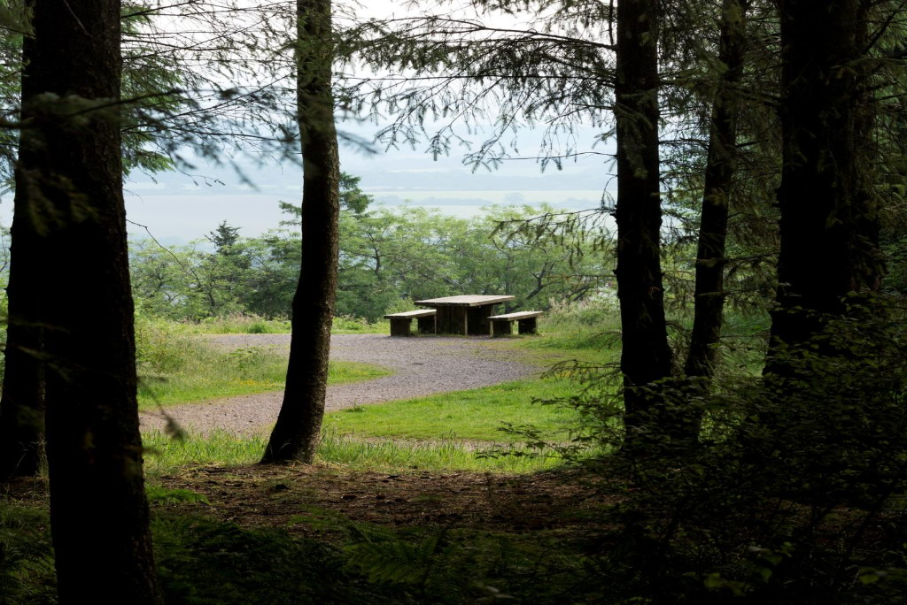
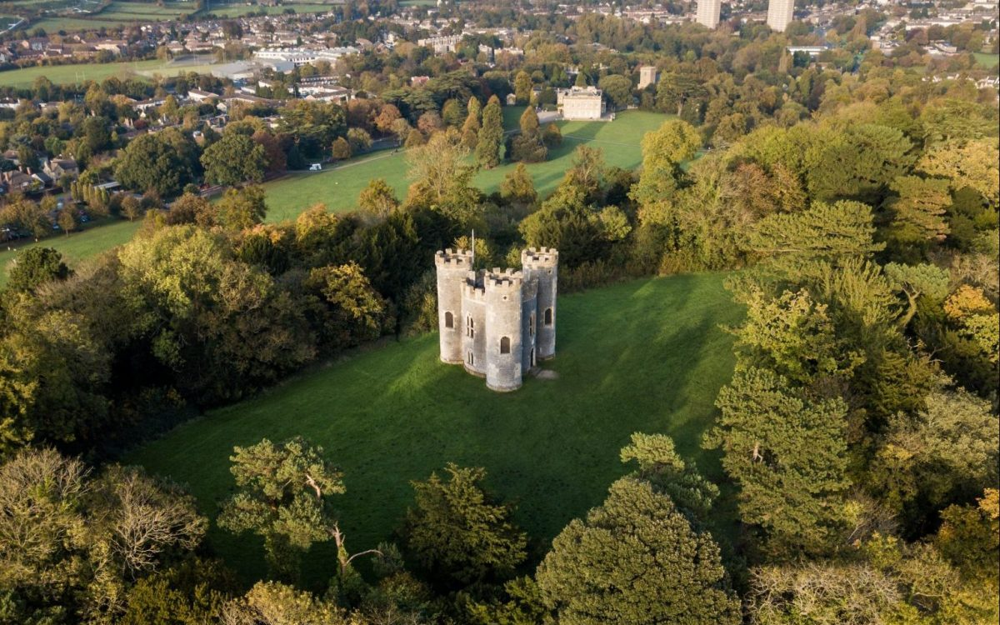
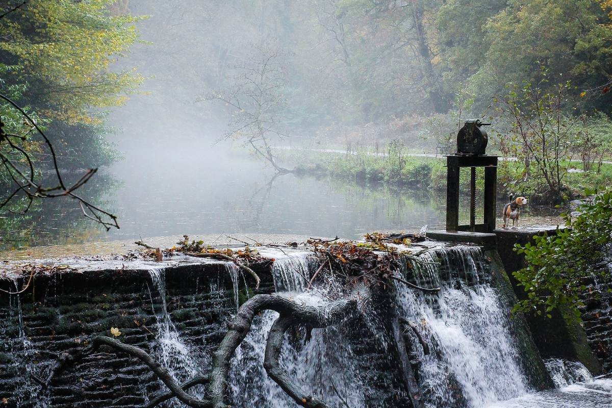

Ninesprings Country Park
A gentle loop through NineSpring Park's shaded woodland, with pauses at river viewpoints and quiet clearings, makes for a peaceful, varied walk.
£5 pp
Choose from our most popular guided walks.
A gentle loop through NineSpring Park's shaded woodland, with pauses at river viewpoints and quiet clearings, makes for a peaceful, varied walk.
£5 pp

A quiet scenic stroll through Witcombe Valley's rolling Somerset countryside, with wooded slopes and open views along the way. Hike to panoramic countryside views. Moderate fitness recommended.
£7 pp

A Staple Hill walk is a breezy, high‑ridge circuit long through quiet forestry and wide Blackdown views with picnic stops.
£10 pp

A walk around Blaise Castle is a relaxed, family‑friendly loop through wooded valleys and open parkland, with the bonus of a dramatic [...] and sheltered paths that make it enjoyable in almost any weather.
£10 pp

A walk at Snuff Mills follows a leafy riverside path along the River Frome, the walk mixing old mill buildings, gentle woodland, and lively water views for a calm, easy outing.
£12 pp

A Ham Hill walk is a broad, breezy circuit hike over golden hamstone ridges and open meadows, with big Somerset views and easy trails that make it a relaxed, scenic outing.
£10 pp